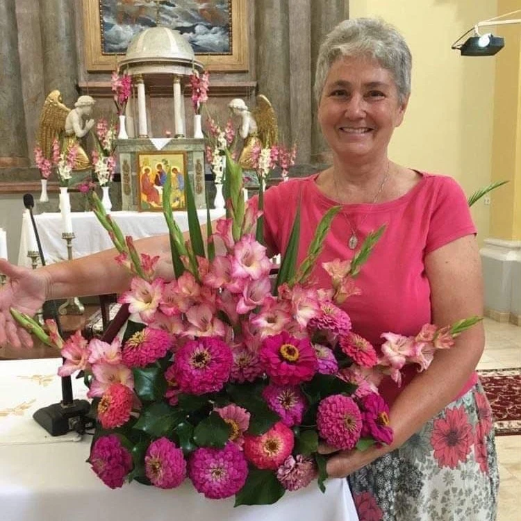
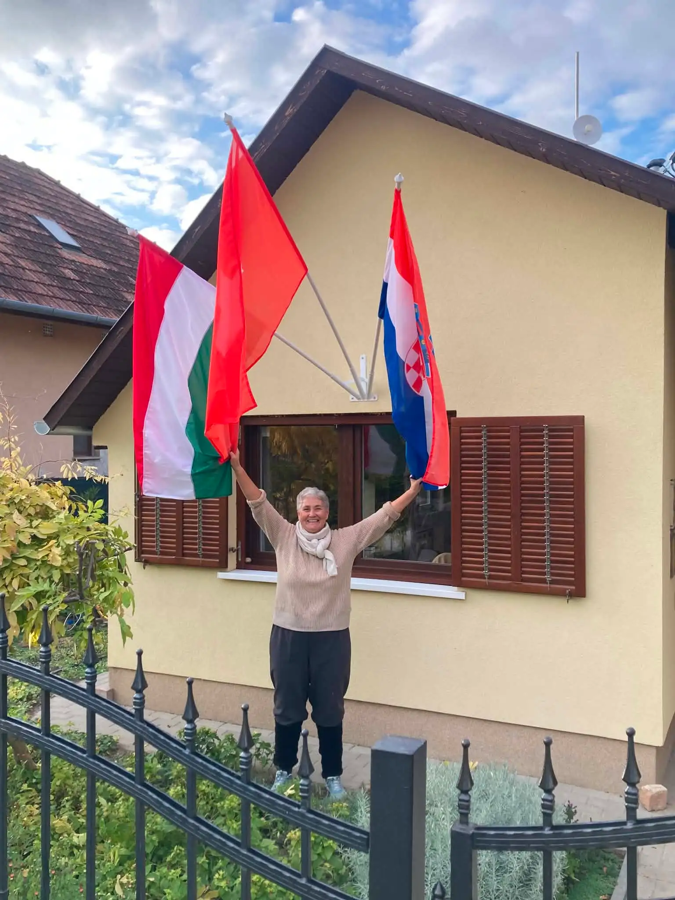
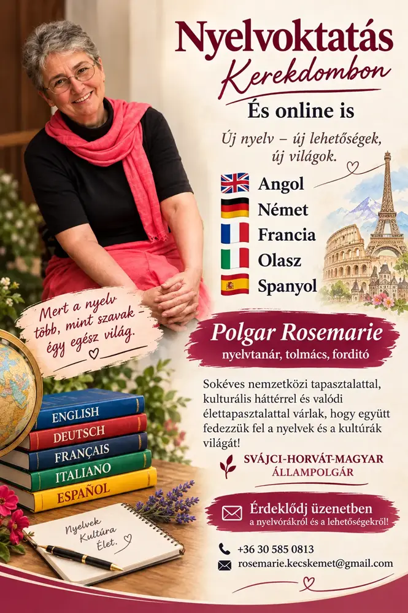

Új lehetőség sokaknak!
Latin nyelvoktatás
„Per aspera ad astra.”
Latin nyelvórákat is vállalok azok számára, akik szeretnének megismerkedni a klasszikus latin nyelvvel, vagy elmélyítenék már meglévő tudásukat.
Üdvözöllek honlapomon!
A nyelvtanulás számomra az új lehetőségek felfedezéséről szól. Szeretném, hogy tanítványaim örömmel tanuljanak, merjenek megszólalni, és a megszerzett tudást valóban használni is tudják.
Ismerj meg jobban!Új lehetőségek
A korábban elérhető nyelvek mellett újabb lehetőségekkel várom az érdeklődőket.
Új lehetőség sokaknak!
„Per aspera ad astra.”
Latin nyelvórákat is vállalok azok számára, akik szeretnének megismerkedni a klasszikus latin nyelvvel, vagy elmélyítenék már meglévő tudásukat.Új szolgáltatás
Magyarországon élő - vagy egyszerűen csak érdeklődő - külföldieknek és más anyanyelvűeknek is szívesen segítek, akik szeretnének magabiztosabban kommunikálni magyarul.
Svájci-horvát-magyar állampolgárkéntn első kézből adom át az életszerű, mindennapi nyelvhasználathoz szükséges hasznos tudást.
Kattints ideGyermekeknek (amint ismerik a betűket) és felnőtteknek egyaránt vállalok oktatást, valamint célirányos felkészítést érettségire és nyelvvizsgára is.
Kattints ideTanulj tetszőlegesen Kerekdombon vagy online!
Kattints ide6 népszerű nyelv – angol, német, francia, olasz, spanyol, és latin – közül választhatsz a céljaidnak megfelelően.
Kattints ideEgy különleges történet
Életem során több országban is éltem: Jugoszláviában, Svájcban, a Dominikai Köztársaságban és
Horvátországban, 2015 óta pedig Magyarországon tartózkodom. Az alpesi országban, ahol négy hivatalos nyelv –
a
német, a
francia, az olasz és a latin eredetű rumancs – használatos, iskolai keretek között németet tanítottam,
emellett magántanítványoknak pedig franciát és olaszt.
A svájci bíróságon és az ottani
rendőrségnél
szimultán
tolmácsként is fordítottam. A Dominikai Köztársaságban a spanyol nyelvet és a karib kultúrát ismertem meg,
beleértve a bennszülöttek életmódját és számtalan íratlan törvényét. Horvát nyelvtudásomat már általános
iskolás koromban megalapoztam, magyar
nyelvismeretemet pedig a debreceni Svetits Katolikus Gimnáziumban tökéletesítettem.
„Svájcban orvosok és ápolónők jártak hozzám olaszul tanulni, hogy tudjanak kommunikálni olasz pácienseikkel. Egy magyar orvos pedig azért keresett meg, hogy el tudja látni számos német, belga és holland betegét. Angolul tanul.”
— Polgár Rosemarie
„La persona pienamente viva è colma di morte.” — Anthony de Mello
Egy korábbi fejezet
1996-ban egy újságcikk mutatta be Polgár Rosemarie életútját. A korabeli írás egy különleges történet emlékét őrzi, amelybe most te is betekinthetsz.
Zene és éneklés
A nyelvek mellett az éneklés is fontos része az életemnek. Örömmel osztok meg veletek két számomra kedves művet: Händel ünnepélyes szépségű Dignare Domine című darabját, valamint Kodály Zoltán meghitt hangulatú Esti dal című kórusművét.
Kísér: Almási-Szabó Tibor orgonaművész.
Fogadjátok szeretettel a felvételeket!
Georg Friedrich Händel
Kodály Zoltán
Felejtsd el a száraz szabályokat és a feszengést! Nálam az élményszerű, gyakorlati tudáson van a hangsúly:
